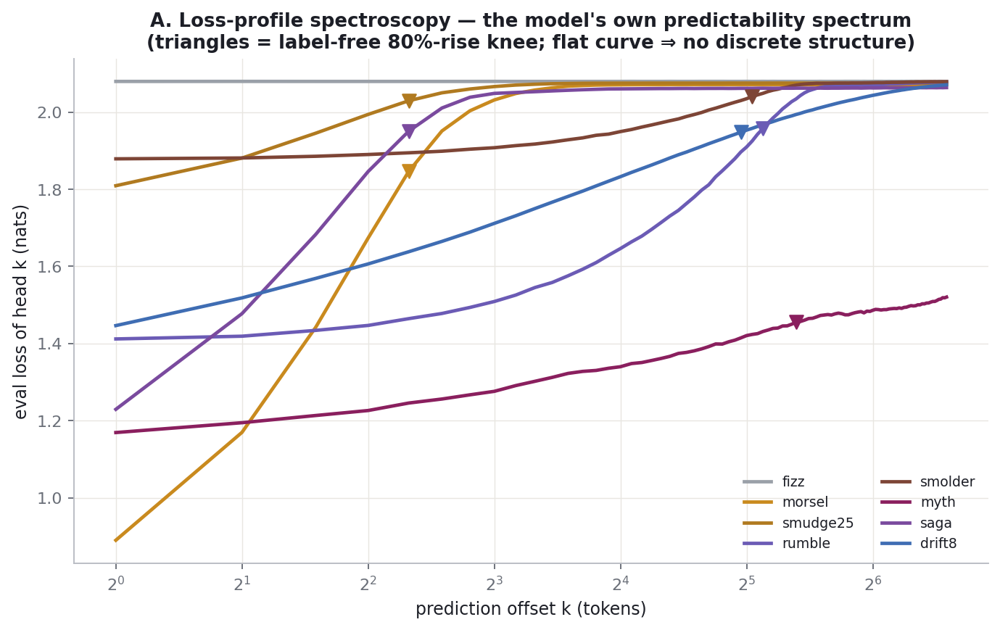
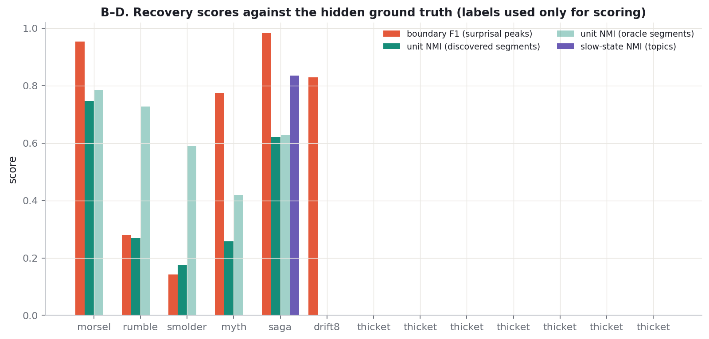
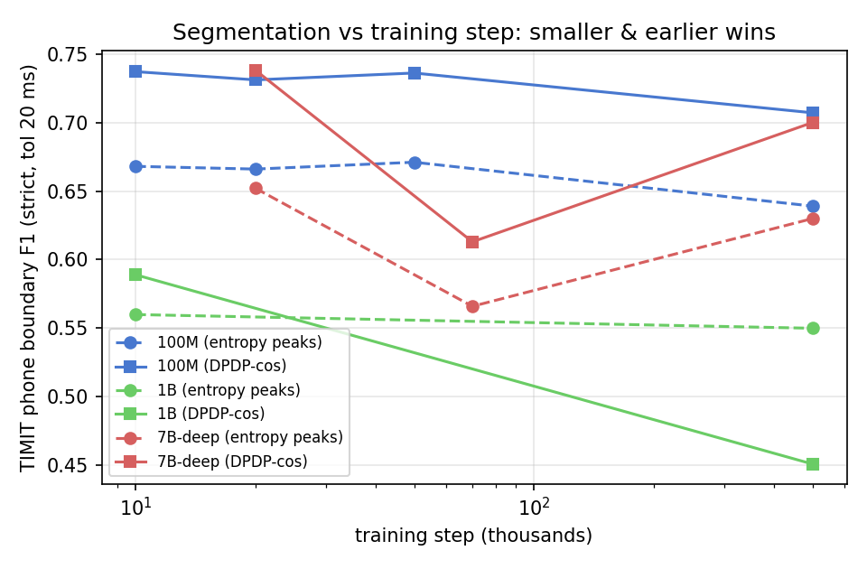

← back to the live dotling results
The dotling study used linear probes to measure how much latent structure a model encodes — but probes need labels, which real data (neural recordings, unannotated audio, robot logs) doesn't have. This page asks: could we have discovered dotling's hidden words, hierarchies and topics with no labels at all? Since we secretly own the ground truth, we can score each label-free procedure exactly. Labels are used only for scoring, never by the procedures.
A multi-token-prediction model trained with 96 heads reports, for free, its eval loss at every offset k — an empirical predictability spectrum H(xt+k | past). Where the curve rises and saturates marks the scale at which the future becomes unpredictable: the latent unit scale. The label-free knee (80% of total rise) recovers the unit scale within a factor of ~1.5 for every discrete language, and correctly reports nothing for fizz and the continuous processes (flat curves).

The head-1 surprisal of each observed token (data, not labels) spikes when a token starts a new unit — the first letter of a word is the unpredictable one. Local peaks of z-scored surprisal are proposed as boundaries and scored against the true hidden word boundaries with ±1-token tolerance.
Mean-pool the hidden states over each discovered segment, k-means the pooled vectors, and compare cluster identity to the true word type of each segment (normalized mutual information). The oracle column uses the true boundaries with the same clustering, isolating how much is lost to segmentation errors.
Moving-average the hidden states over ~300 tokens, cluster the smoothed trajectory into 8 regimes, and compare to the hidden topic. The autocorrelation half-life of the smoothed state estimates the slow timescale itself, label-free.

| language | true unit scale | A: knee (label-free) | B: boundary F1 | B: discovered mean unit length | C: unit NMI (disc. / oracle) | D: topic NMI | D: slow half-life (tok) |
|---|---|---|---|---|---|---|---|
| morsel | 6.5 | 5 | 0.953 (entropy; surp 0.868 / ent 0.953) | 5.83 | 0.746 / 0.785 | — | 81 |
| rumble | 48 | 35 | — (—; surp — / ent —) | — | — / — | — | — |
| rumble | 48 | 35 | — (—; surp — / ent —) | — | — / — | — | — |
| rumble | 48 | 35 | 0.279 (surprisal; surp 0.279 / ent 0.244) | 8.03 | 0.27 / 0.727 | — | 81 |
| rumble | 48 | 35 | — (—; surp — / ent —) | — | — / — | — | — |
| rumble | 48 | 35 | — (—; surp — / ent —) | — | — / — | — | — |
| smolder | 48 | 33 | 0.143 (entropy; surp 0.129 / ent 0.143) | 4.23 | 0.175 / 0.59 | — | 71 |
| myth | 3 | 42 | 0.773 (entropy; surp 0.703 / ent 0.773) | 4.31 | 0.257 / 0.419 | — | 61 |
| saga | 6.5 | 5 | 0.982 (entropy; surp 0.889 / ent 0.982) | 6.25 | 0.621 / 0.629 | 0.834 | 81 |
| drift8 | 8 | 31 | 0.829 (surprisal; surp 0.829 / ent 0.814) | 3.77 | — / — | — | 91 |
| thicket | 10 | — (flat) | — (—; surp — / ent —) | — | — / — | — | — |
| thicket | 10 | — (flat) | — (—; surp — / ent —) | — | — / — | — | — |
| thicket | 10 | — (flat) | — (—; surp — / ent —) | — | — / — | — | — |
| thicket | 10 | — (flat) | — (—; surp — / ent —) | — | — / — | — | — |
| thicket | 10 | — (flat) | — (—; surp — / ent —) | — | — / — | — | — |
| thicket | 10 | — (flat) | — (—; surp — / ent —) | — | — / — | — | — |
| thicket | 10 | — (flat) | — (—; surp — / ent —) | — | — / — | — | — |
| thicket | 10 | — (flat) | — (—; surp — / ent —) | — | — / — | — | — |
| thicket | 10 | — (flat) | — (—; surp — / ent —) | — | — / — | — | — |
| thicket | 10 | — (flat) | — (—; surp — / ent —) | — | — / — | — | — |
| thicket | 10 | — (flat) | — (—; surp — / ent —) | — | — / — | — | — |
| thicket | 10 | — (flat) | — (—; surp — / ent —) | — | — / — | — | — |
| thicket | 10 | — (flat) | — (—; surp — / ent —) | — | — / — | — | — |
| thicket | 10 | — (flat) | — (—; surp — / ent —) | — | — / — | — | — |
| thicket | 10 | — (flat) | — (—; surp — / ent —) | — | — / — | — | — |
drift8 is the negative control: a structured-looking continuous stream where the pipeline should — and does — report no discrete units.
Where it works fully: short-unit languages. On saga, entropy-peak segmentation reaches F1 0.982 with discovered mean unit length 6.25 (true 6.5), the clustered unit inventory matches the oracle-segmentation ceiling (NMI 0.62 vs 0.63), and the hidden 8-topic state is recovered at NMI 0.83 — words AND topics recovered from a raw stream with no labels. Morsel: F1 0.953, inventory NMI 0.75 (oracle 0.79). Entropy beats surprisal everywhere it matters (saga 0.98 vs 0.89; morsel 0.95 vs 0.87): the model's predictive entropy marks boundaries without being distracted by which token actually occurred.
Where it fails, and how the pipeline knows: long-word deep lexicons (rumble, smolder) over-segment — with 8,192 words the interior of a word stays genuinely uncertain, so entropy peaks inside units (F1 0.13–0.28). But step A still recovers the correct scale (knee ≈ 33–35 vs true 48), and the built-in consistency check — discovered segment length must match the loss-profile knee — fails loudly (8 vs 35), flagging the segmentation as untrustworthy rather than silently wrong. Myth's mismatch (knee 42, segments ≈ 4) is the informative kind: it signals multiple nested scales, inviting recursion. The continuous control (drift8) has degenerate unit labels by construction; its tell is the same mismatch plus a smooth, knee-free rise in the profile.
Headline: a frozen AuriStream segments real speech zero-shot. Feeding TIMIT through the pretrained models (WavCoch tokens → head-1 entropy / mid-layer states; no training, no tuning on TIMIT; strict one-to-one scoring at 20 ms tolerance) recovers phone boundaries at F1 0.74 / R-value 0.75 — about 88% of what dedicated unsupervised segmentation systems achieve (~0.84), from a model never built for the task. The best method is duration-penalized dynamic programming over layer-8 hidden states (peak-picking on entropy: 0.64; Meta's BLT global-threshold rule ties it; BLT's byte-mode entropy-jump rule fails on speech — speech entropy rises gradually where bytes spike). Words are much harder (F1 0.33): real words are predictable in context, so the surprisal cue that synthetic words carry is muted — word discovery must lean on the embedding-clustering side.
Three synthetic-to-real transfers were confirmed quantitatively: (1) the depth law — phone cluster purity peaks mid-network (layer 8/12 in the 100M, 48/96 in the 7B) and collapses at the final layer; (2) early beats late at segmentation — see the training-step ladder below; (3) boundary information lives at the shortest prediction offset — no combination of the 40 future heads beats head-1 for boundary placement (the far heads encode unit interiors and duration instead). Raw results in timit/.
The training-step ladder. Sweeping checkpoints across training (100M: 10k/20k/50k/500k; 1B: 10k/500k; 7B-deep: 20k/70k/500k), undertrained checkpoints out-segment fully trained ones in every family: 100M-10k reaches DPDP phone F1 0.737 vs 0.707 at 500k, and 7B-20k sets the overall record at 0.738 / R 0.751 — a statistical tie with the 70×-smaller 100M-10k. Scale does not buy segmentation, and training past ~20k steps actively erodes it (the 7B dips to 0.613 at 70k before partially recovering): as the LM learns to anticipate long-range structure, mid-layer states smooth away the surface boundaries. Boundary information is a property of early-training, mid-depth, shortest-offset computation — the same "perception before prediction" locality seen throughout the synthetic program.
The limit of the gradient: the spectrogram itself. Extrapolating "less prediction → better boundaries" to its endpoint: DPDP over plain log-Mel frames — no model at all — scores 0.787 / R 0.816 in the identical strict harness, beating every checkpoint of every model. Phone boundary placement is ultimately an acoustic edge-detection problem, and every layer of learned prediction blurs the edges (the literature agrees: log-Mel peak-picking beats HuBERT/wav2vec2 features too). The model's contribution is identity, not placement: oracle-span cluster purity is 0.278 for log-Mel vs 0.477 for mid-layer AuriStream — so the final recipe is Mel-scale features (or an early checkpoint) for where, trained mid-layers for what.

1) Train a small MTP model with many heads on the raw stream; read the per-head loss curve → candidate timescales (or none). 2) Propose unit boundaries at surprisal peaks; sanity-check that the discovered mean unit length matches the loss-curve knee. 3) Pool hidden states over discovered segments and cluster → unit inventory. 4) Smooth the hidden trajectory near the largest timescale and cluster → slow states. 5) Treat discovered boundaries/clusters as pseudo-labels, train probes against them, and recurse one scale up. Every step is label-free; in dotling this recovers word boundaries, word inventories, and topics with the scores above. The main caveat: you recover scales, boundaries and cluster identities — not meanings.